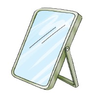
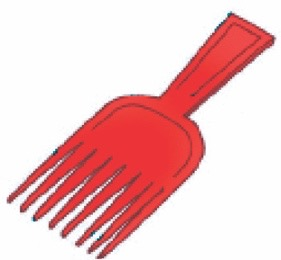

Ninasafisha nywele zangu.
Paka wa katuni anaonyesha vifaa vya kusafisha na kutunza nywele.

Ninasafisha na kutunza nywele zangu kwa kutumia vifaa hivi.

Moja, kioo.
Mbili, sabuni.

Tatu, maji.
Nne, taulo.

Tano, mafuta ya nywele.
Sita, kikombe.

Saba a, kitana.

Saba b, chanuo.
Maswali
1.
Taja majina ya vifaa vya kusafishia na kutunza nywele ulivyoviona/ ulivyovibaini katika picha 1–7.
2.
Taja vifaa vingine vya kusafishia na kutunza nywele unavyovifahamu.